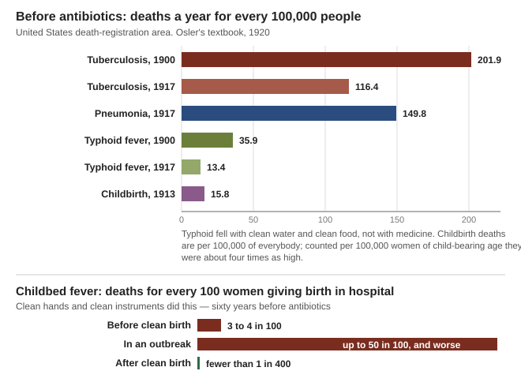
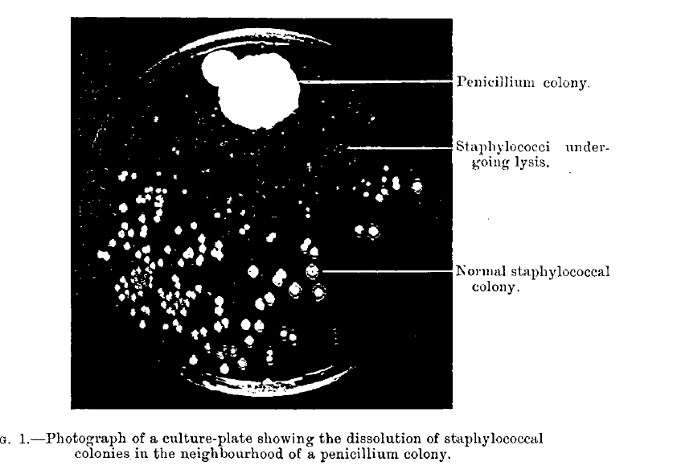
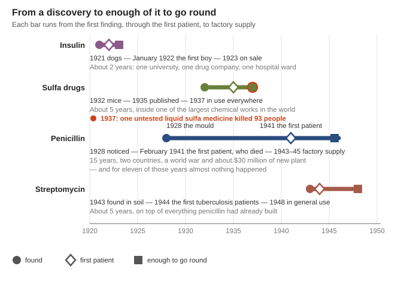

Guides › Health & medicine · Emergency · Index A–Z
Where penicillin, the sulfa drugs, streptomycin and insulin came from, how long each one took, what each one rested on, and what a community would really need before it could make such things again. This is a history guide, not a recipe. What a household can still do today — the medicines worth stocking, the plant remedies that genuinely help, wound care without a pharmacy — is in Making medicines with no pharmacy. The primary sources are in Medical\History-of-Medicine (Osler's 1920 textbook, the 1917 childbed-fever report, Fleming's 1929 paper, the Toronto insulin lectures of 1923, the 1937 report on the elixir deaths, the USDA's penicillin exhibit, a 1920 pharmacy bacteriology text), with the modern counts in Medical\Medicines and Medical\Where There Is No Doctor.
The short version
- Ordinary infections killed, and nothing could be done. In 1917 pneumonia alone killed 112,821 Americans — 149.8 for every 100,000 (Osler, p. 108), and tuberculosis took about one death in ten (p. 186).
- These medicines were not invented by clever people alone. They took whole countries, a war, and years: penicillin took 15 years from the mould to the first factory output, and the US government and industry built about $30 million of new plant to do it (History of penicillin).
- Making an injectable medicine at home or in a village is far more likely to poison than to cure. In 1937 one untested liquid sulfa medicine killed 93 people in 15 states, most of them children (Elixir report, p. 7). Nothing made this way should ever be injected. Nothing in this guide tells you how.
- The knowledge that matters is already written down. Keep the books: on paper, dry, more than one copy, in more than one place. A future community with a real laboratory will work from the original papers, not from a summary like this one.
- The last antibiotics you have are a one-time inheritance. Full course, every time; only when truly needed; never for a cold; never share half a course (WTND, p. 56).
- Prevention is the lever you actually have. Childbed fever was beaten by clean hands sixty years before antibiotics existed: from 3 or 4 deaths in every 100 women to fewer than 1 in 400 (Children's Bureau, pp. 16–17).
Everyone alive today grew up after antibiotics. It is hard to picture what that changed. The best way to see it is to open a medical textbook written just before: William Osler's Principles and Practice of Medicine, the standard book of its day, in its 1920 edition. It is a careful, honest book by the best doctor of his generation, and page after page it says, in effect, we can nurse this person but we cannot cure them.
| What killed people | What the books said |
|---|---|
| Pneumonia | "One of the most widespread and fatal of all acute diseases": 112,821 US deaths in 1917, 149.8 for every 100,000 people (Osler, p. 108). At Johns Hopkins, 658 cases and 200 deaths — 30.4 per cent (p. 128). Osler's treatment chapter opens: "Pneumonia is a self-limited disease" (p. 131) — you waited |
| Tuberculosis | "His most universal scourge": "at least one-eighth of all deaths" by Osler's estimate, and about one death in ten in the United States. The US rate was 201.9 per 100,000 in 1900 and 116.4 in 1917 (Osler, p. 186). The treatment was fresh air, food and rest |
| Childbed fever (puerperal septicemia) | A wound infection caught at birth. In hospitals before clean birth it killed 3 to 4 of every 100 women, "sometimes it reached 10 to 20 per cent and even over 50 per cent during short periods of epidemics" (Children's Bureau, p. 16). In 1913 it still killed about 7,000 American women in one year, out of 15,376 deaths from childbirth (p. 20) |
| Blood poisoning from a wound | Streptococcus and staphylococcus spreading from "puerperal septicaemia or in dissection wounds" along the lymph vessels (Osler, p. 82). For infection of the heart valves, Osler wrote that treatment "is practically that of septicemia — useless and hopeless in a majority of the cases" (p. 829) |
| Typhoid fever | 35.9 per 100,000 in 1900, 13.4 in 1917 (Osler, p. 32) — a fall caused by clean water and clean food, not by medicine |
| Type 1 diabetes | "The younger the patient the less likely is recovery. In children the disease may run a very rapid course, and death may occur within a few weeks" (Osler, p. 460). The only treatment was a near-starvation diet |

What the numbers looked like before antibiotics, and what clean hands alone did to childbed fever (Osler, pp. 32, 108, 186; Children's Bureau, pp. 16–17; a chart drawn for this guide).Notice the pattern in that table. Two of the biggest killers — typhoid and childbed fever — were already falling fast before any antibiotic existed, because of clean water, clean food, clean hands and clean instruments. That is the single most useful fact in this guide, and the last section comes back to it.
📚 Go deeper: Osler's textbook — 1,200 pages of what medicine could and could not do in 1920; the 1917 childbed-fever report.
Alexander Fleming worked at St Mary's Hospital in London. In 1928 he came back to a bench of culture plates that had been left out and "noticed that around a large colony of a contaminating mould the staphylococcus colonies became transparent and were obviously undergoing lysis" — they were dissolving (Fleming 1929, p. 1). He named the substance the mould made penicillin on 7 March 1929 and his paper was published that June (History of penicillin).

The picture that started it, from Fleming's own paper (Fleming 1929, p. 10).He saw what it might be for. His own summary suggests "that it may be an efficient antiseptic for application to, or injection into, areas infected with penicillin-sensitive microbes", and notes that it is "non-irritant and non-toxic" (Fleming 1929, pp. 9–10).
Then nothing happened for eleven years. The reason is in the same paper: "Penicillin loses most of its power after 10 to 14 days at room temperature" (p. 9). Broth that goes weak in a fortnight is not a medicine. Getting the active substance out of the broth and keeping it was a chemistry problem nobody solved for a decade, and the people who tried gave up or moved on (History of penicillin; Alexander Fleming).
In Germany, Gerhard Domagk and the chemists Josef Klarer and Fritz Mietzsch, at the Bayer works of IG Farben, tested dye after dye against infections in mice. In late 1932 one of them, Prontosil, worked. Clinical testing ran from 1932 to 1934, and the results were published on 15 February 1935 (Prontosil). Within months it was being used against childbed fever in London, and the Pasteur Institute in Paris showed in November 1935 that the body breaks Prontosil down into a much simpler substance, sulfanilamide, which was the part that worked and which nobody owned (Prontosil; Sulfanilamide). Domagk was given the Nobel Prize in 1939. For the first time there was a medicine you could swallow that stopped a spreading bacterial infection.
Cheap, unpatented and in demand — and in 1937 that killed people. The S. E. Massengill Company of Bristol, Tennessee wanted sulfanilamide in a liquid a child could drink. Their chemist dissolved it in a sweet industrial solvent — diethylene glycol, the stuff of antifreeze, which is a poison. The Secretary of Agriculture's report to the Senate says it plainly:
"During September and October of 1937 at least 73 persons died as a direct result of taking the drug known as 'Elixir Sulfanilamide'. Twenty other persons who took the 'elixir' died ... The 93 deaths occurred in 15 States, as far east as Virginia, as far west as California ... Before the 'elixir' was put on the market, it was tested by the firm for flavor but not for its effect" (Elixir report, p. 7).
Only 240 gallons were ever made. The first warning reached the government on 14 October 1937, by telephone; the next day an inspector in Tulsa found nine deaths there, eight of them children (pp. 7, 10). The report's judgement is the one sentence worth carrying out of this whole guide:
"The fatal 'elixir' was rushed onto the market without adequate test to determine whether or not diethylene glycol may be safely used as a solvent for sulfanilamide, despite previously published reports in scientific literature showing that diethylene glycol might be dangerous when taken internally. A few simple and inexpensive tests on experimental animals would have quickly demonstrated the toxic properties" (Elixir report, p. 8).
Out of those deaths came the US Federal Food, Drug, and Cosmetic Act of 1938, which for the first time made a maker prove a medicine was safe before selling it (Elixir sulfanilamide; the 1938 Act).
This is the reason this guide is a history and not a recipe. The people who made that elixir had a real factory, trained chemists, a laboratory and the published literature. They still killed 93 people, because they skipped one test. A kitchen, a shed or a village workshop has none of what they had — and the same solvents, the same guesswork, and nobody to notice for weeks.
At Oxford, Howard Florey, Ernst Chain and Norman Heatley went back to Fleming's paper and took on the problem he had left: getting the substance out and keeping it. Their money was small — the Medical Research Council gave £250 to start, plus £300 a year for salaries and £100 a year for expenses, for three years; the Rockefeller Foundation added US$5,000 a year for five years (History of penicillin).
They grew the mould in whatever would hold it, and had 500 ceramic vessels made by a pottery in Burslem; Heatley collected the first 174 of them on 22 December 1940. Two women were hired at £2 a week to tend them (History of penicillin).
The animal test came first. On 1 July 1940 all 25 untreated mice were dead within 16 hours, while all but one of the 25 treated mice were alive ten days later (History of penicillin).
The first patient treated for an infection was Albert Alexander, a policeman, on 12 February 1941 — 200 mg, then 100 mg every three hours. He began to recover. Then the penicillin ran out. The team collected his urine and took the penicillin back out of it to give him again. It was not enough. He relapsed in early March and died on 15 March 1941. Afterwards Florey turned to treating children, because they needed smaller amounts (History of penicillin; Howard Florey; Norman Heatley).
Hold that in mind. A university laboratory in a rich country, working flat out for two years with trained chemists, could not make enough of this medicine to save one policeman.
Britain was being bombed and had no spare factories. On 27 June 1941 Florey and Heatley flew to the United States, and on 14 July they reached the US Department of Agriculture's Northern Regional Research Laboratory at Peoria, Illinois — a farm laboratory, set up to find uses for crop leftovers (History of penicillin).
That was the turn. Three things there changed penicillin from a laboratory curiosity into an industrial product, over about two years:
Then the whole country was put behind it. Twenty-one firms made penicillin during the war. The government built six plants for $7.6 million and industry built sixteen more for 22.6million.Outputwentfrom * * 21billionunitsin1943to1, 663billionin1944andabout6, 852billionin1945 * *,andthepricefellfrom * *200 per million units in 1943 to $6 in 1945** (History of penicillin).
The USDA's own exhibit board puts one year of that in plain numbers. Penicillin production for 1945 took, as raw materials, 5,000,000 lb of lactose (milk sugar) and 12,000,000 lb of corn steep liquor, and produced 4,000 billion units of commercial-grade penicillin — "enough for 4,000,000 hospital cases" (USDA exhibit, p. 8).
Eight and a half thousand tons of milling waste and milk sugar, for four million courses. That is the real exchange rate between farming, industry and antibiotics, and it is why a village cannot do this.
Penicillin did nothing against tuberculosis. Selman Waksman's laboratory at Rutgers had spent years working through soil organisms looking for ones that kill other germs — he is the man who gave the word antibiotic its modern meaning. On 19 October 1943 his PhD student Albert Schatz isolated streptomycin from a soil organism, and the team reported it in January 1944. Elizabeth Bugie was second author on the paper. The laboratory found more than fifteen antibiotics in all; only a few were ever any use in people (Streptomycin; Selman Waksman).
The early patients show how rough it was: at an army hospital at the end of the war the first patient died and the second went blind; the third recovered. Britain's Medical Research Council then ran what is usually counted as the first properly randomised trial in medicine, streptomycin against bed rest alone for tuberculosis. It worked — and it also showed, straight away, bacteria acquiring resistance to it (Streptomycin; Randomised controlled trial). Waksman was given the Nobel Prize in 1952 "for his discovery of streptomycin, the first antibiotic active against tuberculosis".
Two lessons sit in that paragraph, and both still matter. A medicine that cures can also blind or kill — which is why the books insist streptomycin is used only for tuberculosis and always with other medicines (WTND, p. 57). And resistance turned up in the very first proper trial, within months of the first dose.
Insulin is the exception that shows what the other stories were missing. Before it, a child with type 1 diabetes died, usually within weeks or months (Osler, p. 460).
Frederick Banting, a surgeon with an idea, worked in John Macleod's physiology laboratory at the University of Toronto with a student, Charles Best. Macleod's own account, given as two lectures in January 1923 and published that year, records the first success: "On July 31, 1921, the first degenerated gland extract was injected into a diabetic dog". "This injection was followed by a reduction in blood sugar from .20 to .11 in one hour", and the animal became sugar-free (Macleod 1923, p. 68).
What turned that into a medicine was the chemist James Collip, who joined "about this time, January, 1922" and made a cleaner extract, and the Connaught Laboratories, which could make it in quantity (Macleod 1923, p. 71). The first patient was Leonard Thompson, fourteen years old, at Toronto General Hospital on 11 January 1922 (Frederick Banting). Of those first ward cases Macleod wrote that "the percentage of sugar in the blood could be reduced to normal, the urine could be rendered sugar-free, that acetone bodies disappeared, and that patients gave evidences of marked clinical improvement" (Macleod 1923, p. 71). Banting and Macleod were given the Nobel Prize for 1923, and each split his share — Banting with Best, Macleod with Collip (Macleod 1923, p. 10; Frederick Banting).
From the first dog to insulin on sale took about two years. Why so much faster than penicillin? Because insulin is taken out of an animal that already makes it — a pancreas from a slaughterhouse — rather than coaxed out of a living mould and then purified. The hard parts were still hard: every batch had to be tested for strength before it could be given to a person, because the extract was never twice the same (Macleod 1923, p. 73), and an injected extract that is not clean enough causes abscesses and worse (rule of thumb). Even in Toronto the work had to stop for about three months when the move from small batches to large ones went wrong (Macleod 1923, p. 71).
⚠️ Insulin is the one people ask about, so say it plainly. Insulin is a protein. It is destroyed by the gut, so it must be injected. An extract made without a laboratory cannot be made clean enough, cannot be measured for strength, and cannot be kept sterile. Injecting it would very likely kill the person faster than the diabetes. What can be done for someone running out of insulin is in Chronic Illness ("Type 1: insulin without a fridge"), including how to make the supply last and how to care for someone when it is gone.

Discovery is the short part. Getting enough of it to go round is the long part (dates from the sources cited above; a chart drawn for this guide).Each of those stories rests on a base that nobody writing the story bothers to mention, because in 1940 it was simply there. Here it is, written out.
| What it took | What that actually means | Where you can see it |
|---|---|---|
| A country, not a village | Twenty-one firms, six government plants at $7.6 million and sixteen private ones at $22.6 million, in the middle of a world war | History of penicillin |
| A farming surplus behind it | 5,000,000 lb of milk sugar and 12,000,000 lb of corn milling waste, in one year, for four million courses | USDA exhibit, p. 8 |
| Years, not months | 15 years for penicillin; about 5 for the sulfa drugs and for streptomycin; 2 for insulin, and that was the easy one | The chart above |
| Money from outside | Oxford ran on £250 plus £300 a year, and US$5,000 a year from a foundation — grants, not sales | History of penicillin |
| Trained people, many of them | A surgeon, a physiologist, a student and a biochemist in Toronto; a pathologist, a biochemist and a man who could build whatever they needed at Oxford; mycologists, chemists and engineers at Peoria | The sections above |
| Clean water, steady power and heat you can hold to a degree | Everything in these stories was grown, filtered, dried and kept at controlled temperatures, around the clock, for weeks at a time (rule of thumb) | — |
| Glass, metal and a microscope | Oxford grew its mould in 500 ceramic vessels ordered specially from a pottery; Heatley collected the first 174 by hand | History of penicillin |
| Chemical supply | Pure solvents and reagents, in quantity, made by somebody else, to a known strength (rule of thumb) | — |
| A way to know how strong a batch is | Insulin had to be tested batch by batch before anyone could be dosed | Macleod 1923, p. 73 |
| A safety test before a human being | The one step that was skipped in 1937, and 93 people died | Elixir report, p. 8 |
⛔ The honest warning
- Never inject anything made outside a pharmaceutical factory. Not a plant extract, not a mould broth, not an animal extract, not a dissolved tablet of unknown age. Injection skips every defence the body has. What is harmless to swallow can kill when injected.
- Growing a mould on bread or fruit and putting it on a wound is not penicillin, it is a mixed culture of unknown moulds and bacteria of unknown strength, going into broken skin. Fleming's own broth lost most of its strength in ten to fourteen days (Fleming 1929, p. 9) — and he had a laboratory, a pure strain and a microscope to check it with.
- The failure mode is not "it doesn't work", it is "it poisons them". Sulfanilamide was a good medicine; the liquid that carried it killed 93 people, most of them children (Elixir report, p. 7).
- This guide deliberately gives no methods. No sterile technique, no growing media, no choosing or improving strains, no extraction, no purification, no testing for strength, no scaling up and no chemistry. That is not squeamishness: a half-remembered method is exactly how people get poisoned. A community that one day has a real laboratory, trained people and the books will work from the original papers — which is why the next section matters more than this one.
A summary like this one is not the knowledge. It is a map of where the knowledge is. The job now is to make sure the real thing survives — on paper, in more than one copy, in more than one building.
| Folder | What is in it, and why it matters |
|---|---|
Medical\History-of-Medicine |
Fleming's 1929 paper in full, with his photograph of the plate; Macleod and Banting's 1923 lectures on how insulin was found and first given; Osler's 1920 textbook, the whole of medicine before antibiotics; the 1917 childbed-fever report; the 1937 elixir report; the USDA's penicillin exhibit; and Schneider's 1920 Pharmaceutical Bacteriology, a pharmacist's account of how germ theory was arrived at, of sterilising and disinfecting, and of how sera and vaccines were made in 1920 |
Medical\Medicines |
The WHO Model Formulary, the WHO essential medicines lists and MSF's Essential Drugs: what each medicine is for, what dose, what it must not be used with. The WHO antibiotic resistance report for 2025 says which germs still answer to what |
Medical\Where There Is No Doctor |
Chapter 7, Antibiotics: what they are and how to use them, and the Green Pages: doses, dangers, and which antibiotic suits which illness |
Medical\Field-Care\Nursing-Care |
The WHO–PAHO manual on cleaning, disinfecting and sterilising instruments — and on why boiling is not sterilisation |
| The offline Wikipedia | The whole encyclopedia, including the chemistry and microbiology articles: How to use Kiwix |
Add them to the drive, and print the short ones: Florey and Chain's two Lancet papers of 1940 and 1941 (the mouse experiment and the first patients); Schatz and Waksman's 1944 streptomycin paper; Banting and Best's own 1922 papers; a modern microbiology textbook; a clinical microbiology laboratory manual (how to identify a germ and test which medicine it answers to); a pharmacopoeia (the official standards a medicine must meet); and any chemistry textbook at university level. Second-hand bookshops, closing clinics, school and college clear-outs and estate sales are where these turn up.
Bacteria that survive a dose breed, and their offspring survive it too. "When an antibiotic is used too often, the bacteria will get used to it instead of being killed by it. They become resistant to the antibiotic" (WTND, p. 58). This is not a theory about the future; it is happening now and it is getting worse.
After a collapse there will be no new antibiotics. What is on the shelf is the whole inheritance, and every careless dose spends a little of it for everyone, not just for the person taking it. The rules below come straight out of the library's own books, and they are not optional.
| Rule | Why |
|---|---|
| Finish the whole course, every time | "Antibiotics must be taken for their full course. Stopping before you have finished all the days of treatment, even if you feel better, can make the infection return in a form that is even harder to cure" (WTND, p. 56) |
| Only for an infection an antibiotic is known to help | "Antibiotics do no good for the common cold" (WTND, p. 57). Colds, flu and most diarrhoea are not helped and may be made worse (p. 58) |
| Never share out half a course | A half course for two people treats neither and breeds resistance in both (rule of thumb; follows from the full-course rule above) |
| The right dose: "no more, no less" | The dose depends on the illness and on the person's age or weight (WTND, p. 56) |
| The narrowest one that will do | Don't use a broad-spectrum antibiotic where a narrow one will work (same page) |
| By mouth unless injection is truly necessary | "Never use injections of antibiotics if taking them by mouth is likely to work as well" (same page) |
| Don't use one for a minor infection the body will win by itself | Minor skin infections: soap, water and hot soaks. Minor chest colds: fluids, food and rest (WTND, p. 58) |
| If it isn't working in a day or two, think again | Wrong illness, wrong dose, or the germ is already resistant — don't just carry on (WTND, p. 57) |
Doses, which antibiotic for which illness, allergy and what to keep: Chronic Illness, Medical books & found medicines and Making medicines with no pharmacy.
You cannot make penicillin. You can stop most of the infections it would have been used for, with work you can do this week. Every one of these was proved before antibiotics existed, and each has its own guide — this one does not repeat them.
| What to do | Why it works | Where |
|---|---|---|
| Clean drinking water | Typhoid fell from 35.9 to 13.4 deaths per 100,000 between 1900 and 1917 on clean water and clean food alone (Osler, p. 32) | Water Purification |
| Wash hands, and keep human waste away from water and food | Typhoid travels from human waste into water and food; childbed fever was a wound infection carried on hands (Children's Bureau, p. 16; Ignaz Semmelweis, Joseph Lister) | Sanitation |
| Clean every wound properly, and leave a dirty one open | Wound infection becomes blood poisoning, which Osler called "useless and hopeless" to treat (p. 829) | Field Care |
| Clean hands, clean instruments and clean cloth at every birth | Hospital deaths from childbed fever fell from 3 or 4 in 100 to fewer than 1 in 400: "only 1 woman now dies as compared with 15 or 20 formerly" (Children's Bureau, p. 17) | Childbirth & Children |
| Keep food safe, and keep people fed | Osler lists hardship, cold, crowding and poor food as what made pneumonia and tuberculosis fatal (pp. 109, 190) | Preserving Food, Food When It's Scarce |
| Keep vaccinations up to date while you still can, and don't let a chronic illness go untreated | In 1913 childbirth "caused more deaths among women 15 to 44 years old than any disease except tuberculosis" (Children's Bureau, p. 13); a body already weakened loses to the infection | Chronic Illness, Making medicines with no pharmacy |
One more time, because it is the whole point: by 1917, before any antibiotic existed, clean hands at a birth had already cut hospital deaths from childbed fever by a factor of fifteen or twenty, and clean water had cut typhoid deaths by more than half. Nobody needed a factory for that. They needed to know, and then to do it every single time.
The history books added for this guide were written in 1920, 1923 and 1937, and they are kept because of what they record, not as instructions. Treat the medicine in them as history.
| The book says | Do this instead |
|---|---|
| Osler's remedies of 1920 — for smallpox, "We have no specific treatment"; what he offers is fresh air, cold drinks and "a calomel and saline purge" (Osler, p. 359) | Use the modern books for treatment: the WHO formulary, MSF Essential Drugs, Where There Is No Doctor (Medical books & found medicines) |
| Fleming's own suggestion that mould broth "may be an efficient antiseptic for application to, or injection into" infected areas (Fleming 1929, p. 10) | True of pure penicillin, written before anyone could make any. Never put a home-grown mould on a wound or into a body. Clean the wound instead (Field Care) |
| The insulin doses and strengths in the 1923 lectures (Macleod 1923, p. 73) | A unit of insulin was defined differently then. Use the modern labels and the modern books (Chronic Illness) |
| Schneider's 1920 chapter on making sera and vaccines (Schneider 1920, p. 272) | History, and a record of what a real laboratory did. Not something to attempt |
| Anything that treats a medicine as safe because it is "natural" or because it was once sold | Sulfanilamide was a real medicine, and the liquid it was sold in killed 93 people (Elixir report, p. 7) |
🖼️ = pictures in the books on this drive; the plain links open photos in the offline Wikipedia.